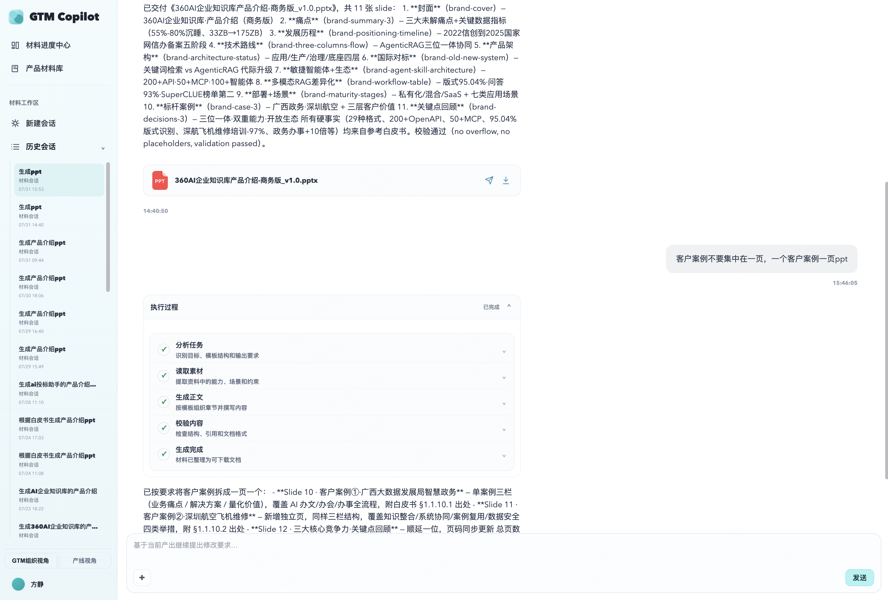
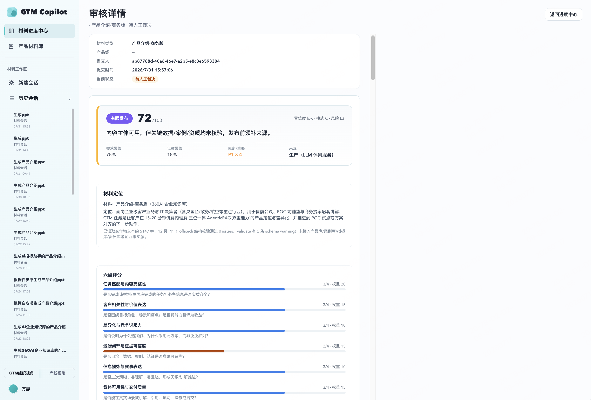
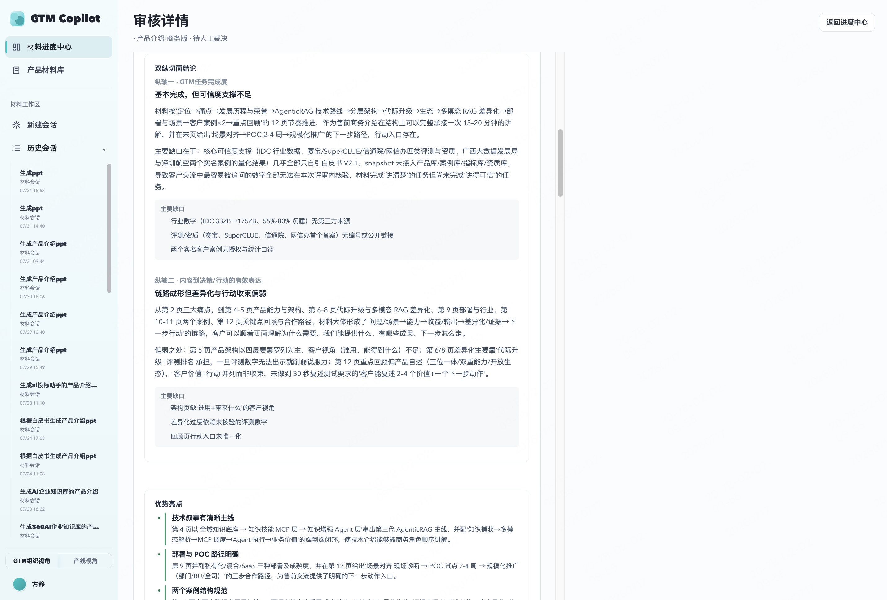

本周完成「单任务多轮对话」与「材料质量评估体系」两项能力落地，让 AI 从「一次性生成」进化为「可协作迭代」，从「能生成」迈向「生成得好」。
本周初步构建材料生成的质量闭环。
让 AI 从「一次性生成」进化为「可协作迭代」。
从「能生成」迈向「生成得好」，为后续质量优化提供可量化的抓手。



1 / 2下周重点不是继续横向铺新能力，而是把评估体系与多轮对话各自深化一层。
| 优先级 | 事项 | 目标 |
|---|---|---|
| P0 | PPT 可视化质量专项 | 提升版式 / 图表生成能力，补齐 AI 视觉审查维度 |
| P0 | 多轮对话压测与场景覆盖 | 构建典型多轮用例集，量化记忆准确率、澄清召回率 |
| P1 | 24 材料撰写 skill 收尾 | 解决生成时长过长、稳定性问题（进行中） |
| P1 | 同一任务多材料生成能力 | 单一任务上下文中一次输入产出多种材料（销售指南 + PPT + 白皮书），共享素材与结论，避免重复澄清 |
多轮对话让用户能「持续调优」，质量评估让系统能「自我判断」——前者是外部反馈通路，后者是内部反馈通路。
当前的短板恰恰在于两条通路都还不够深：评估体系在 PPT 视觉维度评不准，多轮对话在真实场景压不透。下周的重点，是把这两条通路各自做扎实一层，而不是继续横向铺新能力。